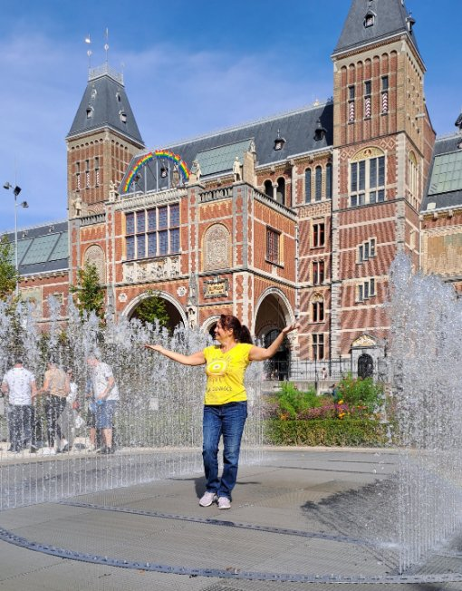

Šta videti u Amsterdamu
Ovo je naš lični Amsterdam putopis - šta videti, gde ići i kako izgleda putovanje sa drugaricama.
Krenule smo u Amsterdam nas šest drugarica iz srednje škole: Svjetlana, Dragana, Nela, Andrea, Jaca i ja.
Zapravo, Jaca je morala da otkaže u poslednji čas. To je bila prava nezgoda jer je ona godinama živela tamo i planirala je da nam pokaže sve one skrivene bisere Amsterdama.
Ipak, Andrea je brzo pronašla zamenu, svoju drugaricu sa hora, Sašku, koja se savršeno uklopila i ubrzo postala nezamenljiv član ekipe na svim sledećim putovanjima.
Plan obilazaka smo, silom prilika, napravile navrat-nanos.
Bile smo smeštene u jednoj sobi sa jednim kupatilom i krevetima na sprat. Hotel je bio vrlo simpatičan, onako "mladalački", sav u grafitima.
Imali su sto za stoni fudbal i tenis, aparat za kokice, pa čak i krevetić sa mačkom.
.jpg)
Imale smo u sobi i malu kuhinju i kutak za sedenje.
Amsterdam nas je očarao.
Kanali, mostići, cveće na svakom koraku.
Kuće su im karakteristično uske i visoke jer se nekada porez plaćao po širini fasade. Većinom su braonkaste i neobičnih oblika, pa su me podsećale na one čokoladne kućice iz bajke o Ivici i Marici.
Grad je pun crkava, a nas je poslužilo predivno vreme: plavo nebo sa belim oblačićima, savršeno za fotografisanje.
.jpg)
.jpg)
.jpg)
.jpg)
.jpg)
.jpg)
.jpg)
.jpg)
.jpg)
.jpg)
.jpg)
.jpg)
.jpg)
Grandiozna građevina na trgu Dam koja dominira celim centrom? To nije obična gradska kuća, već Kraljevska palata (Koninklijk Paleis). Zanimljivo je da je prvobitno građena kao gradska kuća u 17. veku, i u to vreme je bila najveća administrativna zgrada u Evropi. Tek kasnije, u vreme Napoleona (odnosno njegovog brata Luja), pretvorena je u kraljevsku rezidenciju.
Sagrađena na šipovima: Cela palata stoji na tačno 13.659 drvenih šipova pobijenih u peskovito tlo Amsterdama.
Na vrhu fasade, vide se morski konjici koji vuku kočiju morskog boga Neptuna. Ti "jednorozi sa perajima" na fasadi simbolizuju vlast nad morima: Poruka je bila jasna - Amsterdam vlada okeanima.
.jpg)
.jpg)
Dva puta smo se vozile kanalima,
.jpg)
.jpg) posetile
Van Gogov muzej i
posetile
Van Gogov muzej i
.jpg)
.jpg)
.jpg) Rijksmuseum,
Rijksmuseum,
.jpg)
.jpg)
.jpg)
.jpg)
.jpg)
.jpg)
.jpg)
.jpg) a uveče smo obišle i Ulicu crvenih fenjera.
a uveče smo obišle i Ulicu crvenih fenjera.
.jpg)
Kuću Ane Frank smo videle samo spolja jer nismo na vreme kupile karte.
Amsterdam je grad muzeja, ali ne samo onih običnih. Pored klasike, ovde ćete naići na čitav niz neobičnih: erotski muzej, muzej kanabisa, muzej srednjovekovnih metoda kažnjavanja, KattenKabinet (muzej posvećen mačkama), Riplijev „Verovali ili ne“, muzej fluorescentne umetnosti, voštanih figura, STRAAT Museum - ogroman prostor posvećen uličnoj umetnosti i grafitima, kao i pomalo zaboravljeni, ali intrigantni pogrebni muzej.
Bile smo na cvetnoj pijaci. Jele vafle, kupile suvenire na lale.
.jpg)
.jpg)
Zaanse Schans, selo vetrenjača i klompi
Posetile smo i obližnje selo Zaanse Schans sa čuvenim vetrenjačama.
Zaanse Schans je kao da ste zakoračili u staru razglednicu Holandije.
Vetrenjače se polako okreću na vetru, drvene kuće su uredno poređane, a patkice se šetaju okolo.
Ovde možete zaviriti u stare zanate: od pravljenja klompi do sira, i na trenutak usporiti tempo, daleko od gradske vreve Amsterdama.
Savršeno mesto za laganu šetnju i fotografije koje izgledaju nestvarno.
.jpg)
.jpg)
.jpg)
.jpg)
.jpg)
.jpg)
.jpg)
Zaista smo se divno provele.
Bilo je to putovanje puno predivnih, nasmejanih i lekovitih momenata.
Četiri smešne situacije koje ćemo pamtiti
Riba i frizura
Naišle smo na skulpturu ogromne riblje glave čija usta svetle. Dragana je stala da se slika i gurnula glavu ribi u usta, kad je odjednom grunula voda! Pravo Dragani po glavi.
A ona ima onu divnu, prirodno kovrdžavu kosu koju je tek isfenirala... "O ne, sad će se skroz ukovrdžati!"
Smejale smo se kao lude.
.jpg)
"Ima, ima"
Šetamo tako preko mostića i ugledamo dva seks-šopa jedan pored drugog. Krenula je cika, vriska i smeh.
Vičemo mi: "Idemo, ovde nema ko da nas vidi!"
Kad odjednom, čovek koji je išao iza nas dobacuje na čistom srpskom: "Ima, ima!"
Ponovo opšti smeh.
.jpg)
Fontana iznenađenja
Ispred Rijksmuseuma su fontane u obliku kvadrata gde paralelne stranice naizmenično prskaju.
Ja šetam između njih kao "oslobodilac", podigla ruke i poziram. U momentu kad sam zakoračila, fontane ispred mene prorade.
Pljus! Sva sam bila mokra.
Srećom, dan je bio sunčan, pa sam se brzo osušila. Umalo sam umesto slike gde paradiram dobila fotku na kojoj sam pokisla kao miš.
Svjetlana, koja me je slikala, nije mogla da dođe sebi od smeha.

Selfi majstor
U selu Zaanse Schans stale smo ispred vetrenjače da se slikamo. Zamolile smo jednog momka da nas uslika.
Uzimam ja telefon, drugarice pitaju da li je slika dobra, ja otvaram galeriju, kad tamo selfi tog momka sa ogromnim osmehom preko celog ekrana!
Dobra je.
Srećom, slikao je i nas pre toga, pa imamo uspomenu, ali njegov "kez" nas je dokrajčio od smeha.
Vratile smo se zdrave, čitave i pune utisaka.
Što je najvažnije, vratile smo se sa željom da ovo ponovimo.
Zaista je privilegija i retkost u ovim godinama imati takvo društvo za putovanja i provod.
Česta pitanja
Koliko dana je dovoljno za Amsterdam?
Za prvi obilazak dovoljno je 2–3 dana, ali ako planirate i izlete poput Zaanse Schans, idealno je 4 dana.
Da li vredi ići u Zaanse Schans?
Da, to je jedno od najlepših mesta u blizini Amsterdama, poznato po vetrenjačama i autentičnoj holandskoj atmosferi.
Kako se najlakše kretati po Amsterdamu?
Grad je odličan za pešačenje i bicikl, ali i javni prevoz je vrlo dobro organizovan.
Da li je Amsterdam skup?
Spada u skuplje evropske gradove, posebno smeštaj, ali se može putovati uz dobar plan i izbor aktivnosti.
Koje muzeje obavezno posetiti?
Najpoznatiji su Van Gogov muzej i Rijksmuseum, ali Amsterdam nudi i niz neobičnih muzeja za različite ukuse.
Kada je najbolje vreme za posetu Amsterdamu?
Proleće i rana jesen su idealni zbog prijatnog vremena i manje gužve.